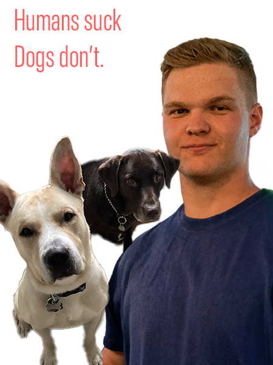

Connor Starowesky's Biography
Personal Info
My name is Connor Starowesky and I am a communications and rhetoric studies major at Syracuse University. I am interested in analyzing how humans communicate with each other with implicit communication techniques through modern media.
Skills and Interests
Outside of the world of communications, I am proficient several other artistic skills, such as;
- Adobe Photoshop
- Adobe Illustrator
- Adobe InDesign
- Adobe Premier Pro
- Figma
I also enjoy photography, video games, and working on cars with my friends. I have a rescue dog named Gambino, who is an all-American mutt and my best friend in the entire world.
Career
I've been in the Army since 2020. I am currently a transportation officer in the New York Army National Guard. Upon graduation from Syracuse University, I will transition to the active duty Army where I will become a field artillery officer.